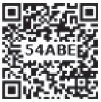
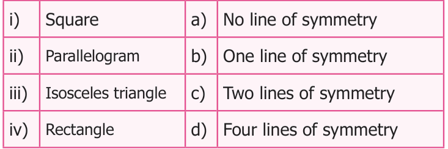
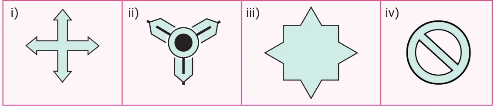
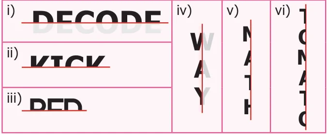
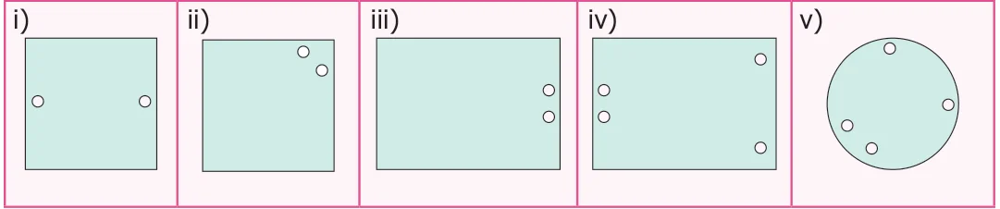
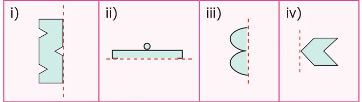
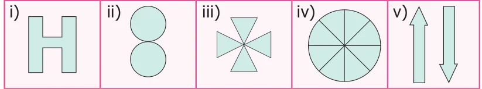
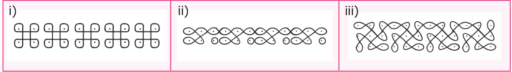
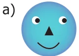
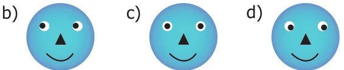

- Fill in the blanks
- The reflected image of the letter 'q' is _______
- A rhombus has ________ lines of symmetry.

- The order of rotational symmetry of the letter 'z' is ______
- A figure is said to have rotational symmetry, if the order of rotation is atleast ______
- ___________ symmetry occurs when an object slides to new position.
- Say True or False
- A rectangle has four lines of symmetry.
- A shape has reflection symmetry if it has a line of symmetry.
- The reflection of the name RANI is
- Order of rotation of a circle is infinite.
- The number 191 has rotational symmetry.
- Match the following shapes with their number of lines of symmetry.

- Draw the lines of symmetry of the following.

- Using the given horizontal line / vertical line as a line of symmetry, complete each
alphabet to discover the hidden word.

- Draw a line of symmetry of the given figures such that one hole coincide with the other
hole(s) to make pairs.

- Complete the other half of the following figures such that the dotted line is the line of
symmetry.

- Find the order of rotation for each of the following.

- A standard die has six faces which are shown below. Find the order of rotational symmetry
of each face of a die?
- What pattern is translated in the given border kolams?

Objective Type Questions
- Which of the following letter does not have a line of symmetry?
- A b) P c) T d) U
- Which of the following is a symmetrical figure ?


- Which word has a vertical line of symmetry?
- DAD b) NUN c) MAM d) EVE
- The order of rotational symmetry of 818 is _____
- 1 b) 2 c) 3 d) 4
- The order of rotational symmetry of is _____
- 5 b) 6 c) 7 d) 8